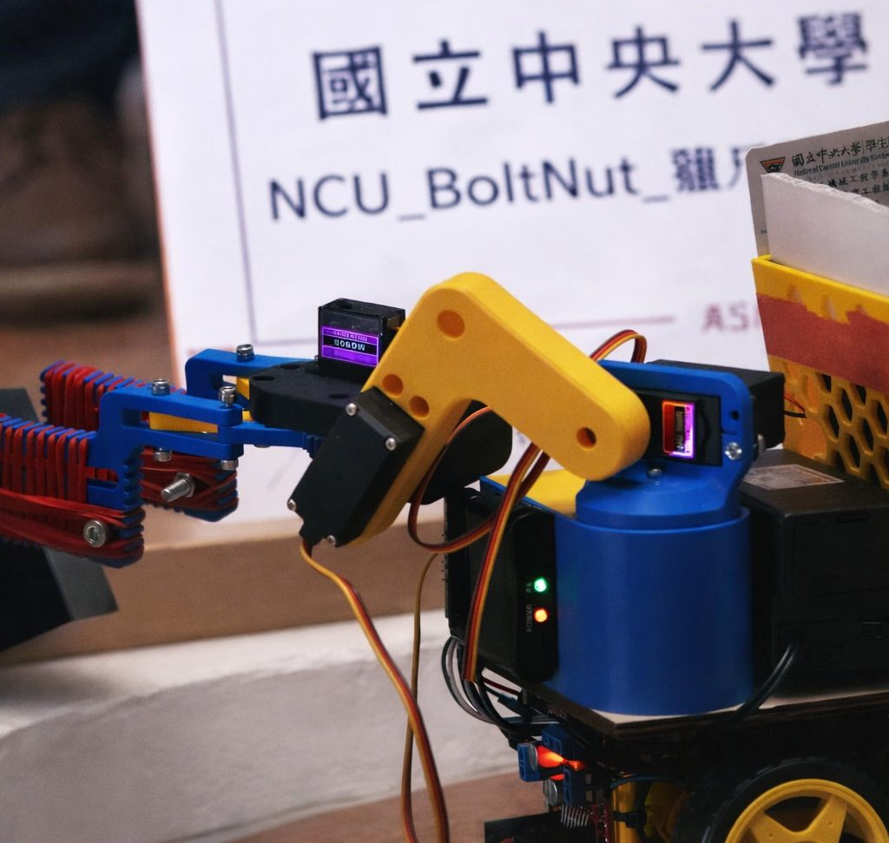
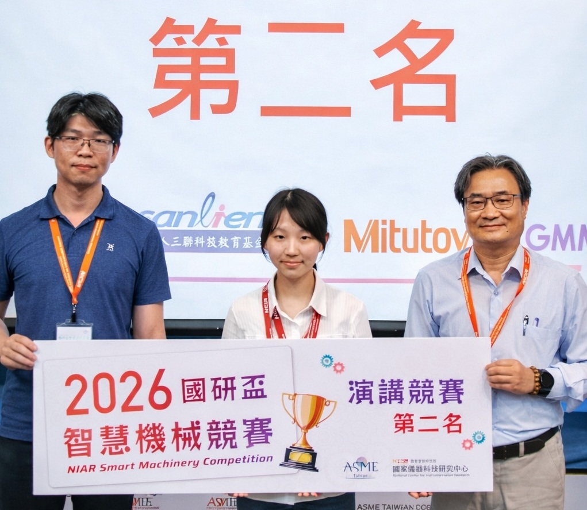

競賽成就 / ACHIEVEMENTS
BoltNut 在競賽舞台上留下的足跡與成績
2025 東京威力科創機器人大賽
跨校聯隊「Future Shark」榮獲亞軍
團隊與陽明交通大學、清華大學及台灣師範大學跨校組成「Future Shark」隊伍，於全台頂尖隊伍雲集的東京威力科創機器人大賽中，展現卓越設計能力、策略運用與團隊協作，成功完成賽場挑戰，最終榮獲亞軍。
2025年
2026 ASME SDC · 國研盃智慧機械競賽
派出 3 支隊伍參賽，「獵爪清道夫」奪下第八名
團隊積極鼓勵成員參與校外競賽驗證學習成果，於 2026 ASME SDC 國研盃智慧機械競賽共派出 3 支隊伍參賽，其中「NCU BoltNut－獵爪清道夫」榮獲第 8 名。競賽期間，江宜臻同學於英文演講競賽中以流利英語闡述機器人設計理念，榮獲第 2 名佳績，展現 BoltNut 成員在技術與表達上的雙重實力。
2026年3月28日
2025–2026 ASME SDC
ASME SDC Kick-off Party & 備賽歷程
2025 年 12 月 26 日正式啟動 ASME SDC 備賽計畫。全員進行賽題深度解析、分組討論與機構初步構思，凝聚共識、分工明確，為日後登上國研盃競賽舞台奠定紮實基礎。
Our Robot
競賽機器人
獵爪清道夫
2026 ASME SDC 國研盃

Academic
學術成就
英文演講競賽
第 2 名
江宜臻同學於 2026 ASME SDC 國研盃競賽期間，在英文演講競賽中脫穎而出，以清晰流利的英語表達機器人設計理念與競賽策略，展現 BoltNut 成員在專業技術之外的卓越口語能力，榮獲第 2 名。

Other Milestones
其他重要成果
團隊機器人研發工作室
獲天鋼贊助工業級工作桌、工具櫃與系統化收納設備，運用 IdeaNCU 補助添購電動工具，建置機器人組裝區、電控測試區、3D 列印區、零件管理區及功能測試區等專業空間。
大一培訓課程與隊內競賽
團隊成立以來規模最大的培訓活動，帶領 21 名跨系新生從零開始學習機器人設計與製作，並以隊內競賽驗證教學品質，完整體驗一台機器人從概念到成品的工程流程。